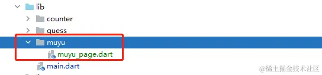
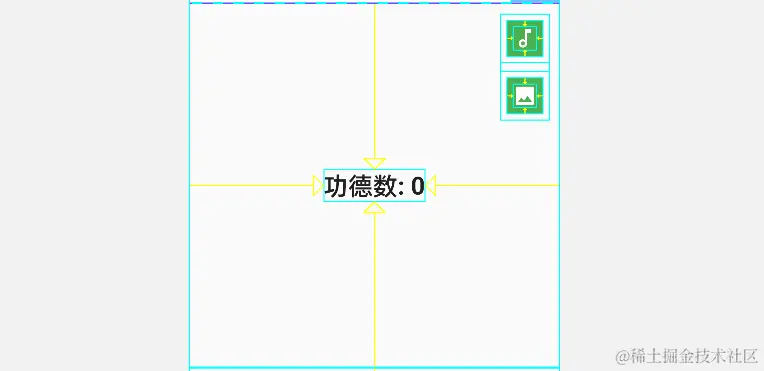
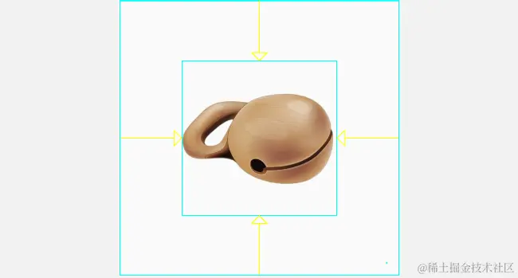
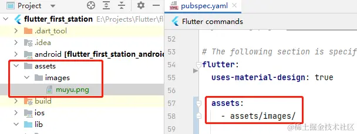
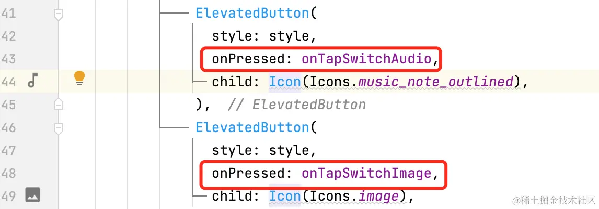

- 01 前言-教程内容导读.md.html
- 02 Flutter 开发环境的搭建.md.html
- 03 新手村基础 Dart 语法 (上).md.html
- 04 新手村基础 Dart 语法 (下).md.html
- 05 Flutter 计数器项目解读.md.html
- 06 猜数字界面交互与需求分析.md.html
- 07 使用组件构建静态界面.md.html
- 08 状态数据与界面更新.md.html
- 09 校验结果与提示信息.md.html
- 10 动画使用与状态周期.md.html
- 11 猜数字整理与总结.md.html
- 12 电子木鱼界面交互与需求分析.md.html
- 13 电子木鱼静态界面构建.md.html
- 14 计数变化与音效播放.md.html
- 15 弹出选项与切换状态.md.html
- 16 用滑动列表展示记录.md.html
- 17 电子木鱼整理与总结.md.html
- 18 白板绘制界面交互与需求分析.md.html
- 19 认识自定义绘制组件.md.html
- 20 通过手势在白板上绘制.md.html
- 21 白板画笔的参数设置.md.html
- 22 撤销功能与画板优化.md.html
- 23 应用界面整合.md.html
- 24 数据的持久化存储.md.html
- 25 网络数据的访问.md.html
- 26 教程总结与展望.md.html
- 捐赠
13 电子木鱼静态界面构建
下面我们正式开始 电子木鱼 小项目的开发，在 lib 下创建一个 muyu 的文件夹，用于存放电子木鱼相关代码文件：

1、界面布局分析
本篇主要完成电子木鱼的主要静态界面的构建、如下所示，分别是界面效果和布局分析效果。从右图可以很轻松地看出界面中的布局情况：
| 界面效果 | 布局查看 |
|---|---|
- 分为上中下三块，上方是标题、中间是文字和按钮、下方是图片。
- 整体使用 Scaffold 组件，头部使用 AppBar 组件；主体内容上下平分，可以使用 Column + Expanded 组合。
- 上半部分的两个绿色按钮，可以通过 Stack + Positioned 组合叠放在右上角。
- 下半部分通过 Centent + Image 组件让图片居中对其，并通过 GestureDetector 监听点击事件。
2. 电子木鱼整体界面 MuyuPage
电子木鱼在功能上和计数器是非常相似的，只不过是敲击点不同，界面不同不同罢了。由于点击过程中 功德数 会进行变换，使用这里让 MuyuPage 继承自 StatefulWidget ，通过对于的状态类 _MuyuPageState 来维护数据的和界面的构建及更新。
class MuyuPage extends StatefulWidget {
const MuyuPage({Key? key}) : super(key: key);
@override
State<MuyuPage> createState() => _MuyuPageState();
}
在 _MuyuPageState 的 build 方法中，对整体界面进行构建。使用 Scaffold 组件提供通用结构，appBar 入参组件确实头部标题栏，一般使用 AppBar 组件。其中有很多配置属性:
- backgroundColor： 标题栏的背景色。
- elevation：标题栏的阴影深度。
- titleTextStyle： 标题的文字样式。
- iconTheme： 标题栏的图标主题。
- actions : 标题栏右侧展示的组件列表。
这里说一下 titleTextStyle 和 iconTheme 。 如果直接为 title 中的文字设置样式，直接为 actions 中的图标设置颜色，效果是一样的。但如果 actions 有很多图标按钮，一个个配置就非常麻烦，而使用主题，可以提供默认样式，减少很多重复的操作。
class _MuyuPageState extends State<MuyuPage> {
@override
Widget build(BuildContext context) {
return Scaffold(
appBar: AppBar(
elevation: 0,
backgroundColor: Colors.white,
titleTextStyle: const TextStyle(color: Colors.black,fontSize: 16,fontWeight: FontWeight.bold),,
iconTheme: const IconThemeData(color: Colors.black),
title: const Text("电子木鱼"),
actions: [
IconButton(onPressed: _toHistory,icon: const Icon(Icons.history))
],
),
);
}
void _toHistory() {}
}
主体内容是上下平分区域，可以使用 Column + Expanded 组件。建议再写构建组件代码时，不要塞在一块，适当的通过函数或类进行隔离封装。比如下面代码中，两个部分组件的构建，交给两个方法完成，这样可以让组件构件的条理更清晰，易于阅读和修改。
Scaffold(
// 略同...
body: Column(
children: [
Expanded(child: _buildTopContent()),
Expanded(child: _buildImage()),
],
),
)
3. 主体内容的构建
上半部分界面交由 _buildTopContent 方法构建，效果如下： 其中 功德数 文字居中显示；上角有两个按钮，分别用于切换音效和切换图片；按可以通过 ElevatedButton 组件进行展示，并通过 style 入参调节按钮样式。
另外，两个按钮上下排列，可以使用 Column 组件，也可以使用竖直方向的 Wrap 组件。使用 Wrap 组件可以通过 spacing 参数，控制子组件在排列方向上的间距，想比 Column 来说方便一些。

Widget _buildTopContent() {
// 按钮样式
final ButtonStyle style = ElevatedButton.styleFrom(
minimumSize: const Size(36, 36), // 最小尺寸
padding: EdgeInsets.zero, // 边距
backgroundColor: Colors.green, // 背景色
elevation: 0, // 阴影深度
);
return Stack(
children: [
Center(
child: Text(
'功德数: 0',
style: TextStyle(
fontSize: 24,
fontWeight: FontWeight.bold,
),
),
),
Positioned(
right: 10,
top: 10,
child: Wrap(
spacing: 8,
direction: Axis.vertical,
children: [
ElevatedButton(
style: style,
onPressed: () {},
child: Icon(Icons.music_note_outlined),
),
ElevatedButton(
style: style,
onPressed: () {},
child: Icon(Icons.image),
)
],
)),
],
);
}
下半部分界面交由 _buildImage 方法构建，效果如下：是一个居中展示的图片，在 Flutter 中，展示图片可以使用 Image 组件。这里使用 Image.asset 构造函数，从本地资源中加载图片：

Widget _buildImage() {
return Center(
child: Image.asset(
'assets/images/muyu.png',
height: 200, //图片高度
));
}
想要使用本地资源，需要进行配置。一般来说，会在项目中创建一个 assets 文件夹，用于盛放本地资源文件，比如图片、音频、文本等。这里把图片放在 images 文件夹中，如何在 pubspec.yaml 文件的 flutter 节点下配置资源文件夹，这样 images 中的资源就可以使用了。

到这里，我们就已经实现了期望的布局效果，当前代码位置 muyu_page.dart 。从静态界面的构建过程中，不难体会出：这就像通过已经存在的积木，拼组成我们期望的展示效果。
| 界面效果 | 布局查看 |
|---|---|
4. 组件的封装
一个自定义的 Widget ，可以封装一部分界面展示内容的构建逻辑。在开发过程中，我们应该避免让一个 Widget 干所有的事，否则代码会非常杂乱。应该有意识地合理划分结构，将部分的构建逻辑独立出去，以便之后的修改和更新。
当前代码中，通过两个函数来封装上下部分界面的构建逻辑。但函数仍在状态类 _MuyuPageState 中，随着需求的增加，会导致一个类代码会越来越多。我们也可以将界面某部分的构建逻辑，通过自定义 Widget 来分离出去。
这里通过 CountPanel 组件来封装上半部分界面的构建逻辑。可以分析一下，界面在构建过程中需要依赖的数据，并通过构造函数传入数据。其中的构建逻辑和上面的 _buildTopContent 方法一样的。
如果把这些构建逻辑比作一个人，那函数封装和组件封装，就相当于这个人穿了不同的衣服。其内在的本质上并没有太大的差异，只是外部的表现不同罢了。函数封装，在其他的类中，相当于给别人打工；组件封装，有自己的类名，正规编制，相当于自己当老板，经营构建界面逻辑。
class CountPanel extends StatelessWidget {
final int count;
final VoidCallback onTapSwitchAudio;
final VoidCallback onTapSwitchImage;
const CountPanel({
super.key,
required this.count,
required this.onTapSwitchAudio,
required this.onTapSwitchImage,
});
Widget build(BuildContext context) {
//同上 _buildTopContent 方法
}
}
另外，对于组件封装而言，会遇到一些事件的触发。比如这里点击切换音效按钮该做什么，对于 CountPanel 而言是不关心的，它只需要经营好界面的构建逻辑即可。这时可以通过 回调 的方式，交由使用者来处理，其实按钮组件的 onPressed 回调入参也是这种思路：

这样，在 _MuyuPageState 中，可以直接使用 CountPanel 完成上半部分的展示，从而减少状态类中的代码量。而 CountPanel 组件的职责也很专一，就更容易做好一件事。
Expanded(
child: CountPanel(
count: 0,
onTapSwitchAudio: _onTapSwitchAudio,
onTapSwitchImage: _onTapSwitchImage,
),
),
void _onTapSwitchAudio() {}
void _onTapSwitchImage() {}
5.本章小结
本章主要对电子木鱼的静态界面进行搭建，除了学习使用基础组件布局之外，最主要的目的是了解组件对构建逻辑的封装。封装可以自责进行隔离，并在相似的场景中可以复用。
就像皇帝不可能一个人治理整个国家。无法良好地组织和管理各个区域，把所有事交由一个人来做，随着疆域的扩大，早晚会因为臃肿而无法前进，会阻碍社会(应用)的发展。虽然对于新手而言，关注代码的组织方式为时过早，但要有这种意识，避免出现一个掌控所有逻辑的 上帝类 。
小练习: 通过 MuyuAssetsImage 组件封装下半部分的界面构建逻辑。 当前代码位置 muyu
到这里，基本的静态界面就搭建完成了，下一章将处理一下基本的交互逻辑。
© 2019 - 2023 Liangliang Lee. Powered by gin and hexo-theme-book.